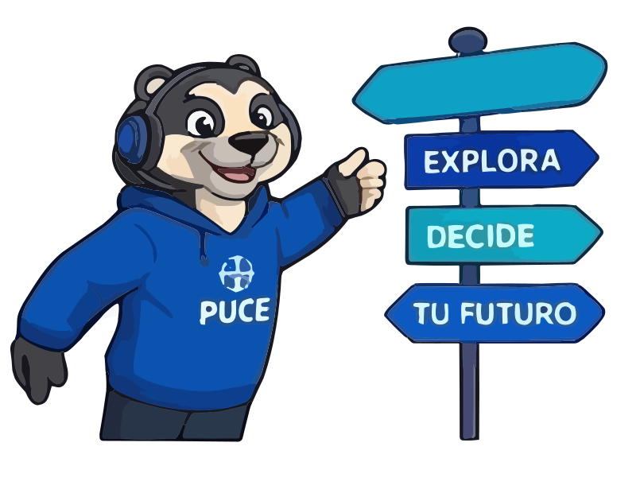
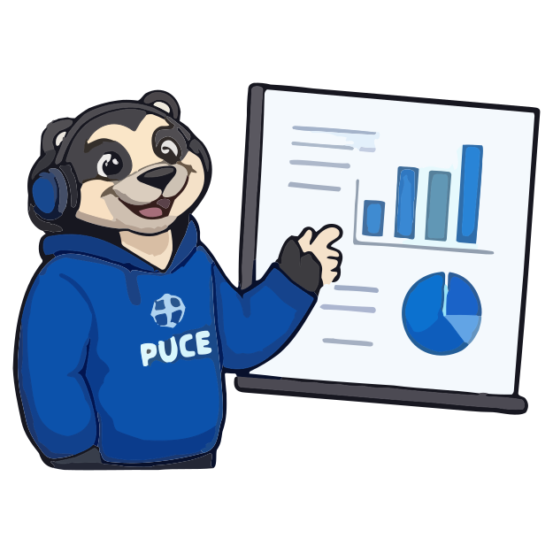

Descubre tu carrera ideal en 10 minutos
Prueba mini-retos con materias reales de primer semestre de la PUCE
y elige sin miedo a equivocarte. 32 de 40 estudiantes ya pidieron probarlo.

Para el estudiante y para la universidad
El test web de la PUCE tiene unas 70 preguntas y entrega clasificaciones genéricas. En nuestras entrevistas, las estudiantes lo resolvieron en 10 a 15 minutos, marcando «tal vez» o «no» al azar, y nadie abrió el PDF de las mallas.
El choque llega en el primer semestre, con las materias filtro que nadie advirtió. Las familias gastan entre 30 y 200 dólares en clases particulares y preuniversitarios, y cada desertor de primer nivel le cuesta a la universidad entre 1.500 y 2.500 dólares (estimación del equipo).
12 entrevistas con el método Mom Test y 40 encuestas a estudiantes de 3.° de Bachillerato en Quito (septiembre de 2026)
8 de 12
entrevistados dicen que los tests vocacionales dan diagnósticos genéricos que aumentan la indecisión.
6 de 12
construyeron apaños de alto esfuerzo: clases pagadas, IA para entender la malla o revisarla línea por línea con familiares.
30
documentos llegó a abrir una estudiante para entender qué materias le esperaban.
«Los resultados me salen y me dicen: puedes seguir esto o puedes seguir este otro… al final tengo todas las opciones y no me decido por una sola.»— Estudiante de 3.° de Bachillerato, Quito
«Prácticamente me dijeron: tú puedes estudiar lo que tú quieras… no considero que haya sido de aporte.»— Estudiante de primer semestre de Ingeniería, Quito
Proceso del trabajo del cliente · Trabajo: descubrir su vocación y elegir la mejor carrera
Unas 70 preguntas: el estudiante se aburre y responde al azar.
Resultados genéricos: «eres apto para Ingeniería, Medicina o Arte».
Poca claridad sobre el campo laboral y las materias reales de primer semestre.
Si elige mal, deserta en el primer semestre y pierde tiempo y dinero.
Test vocacional adaptativo con contraste curricular: tres pasos, desde el celular
Un test corto de intereses. El 70 % de las encuestadas tolera entre 5 y 15 minutos: lo diseñamos para ese límite.

Las tres carreras de la PUCE más afines a ti, con su facultad y tu porcentaje de afinidad.
Ejercicios de 2 minutos de materias de primer semestre, como Álgebra, Lógica o Morfofunción, para que vivas la carrera antes de matricularte.
Lienzo de la propuesta de valor · Trabajos del estudiante: descubrir su vocación, elegir la mejor opción para su contexto y decidir con el respaldo de su familia
| Frustración del estudiante | Cómo la aliviamos |
|---|---|
| «Los test vocacionales son muy genéricos» | Test vocacional personalizado, validado psicométricamente por una psicóloga de Admisiones PUCE |
| «No entiendo cuál es el campo de trabajo de la carrera» | Información simplificada de mallas, costos y campos de trabajo |
| «Las mallas tienen información técnica de materias que no entiendo» | Mini-retos que te dejan probar una parte de las materias antes de matricularte |
| Lo que el estudiante quiere lograr | Cómo se lo damos |
|---|---|
| Entender sus habilidades y cómo se relacionan con el trabajo que hará | Cuestionario dinámico que se adapta al usuario y relaciona sus habilidades con las carreras |
| Tener una idea clara de las materias que enfrentará antes de matricularse | Toda la información de mallas, carreras y costos en un solo lugar, interactiva y a través de retos |
| Saber hacia dónde dirigirse y cuáles son los siguientes pasos | Acompañamiento integral, conectado con los asesores de Admisiones |
Productos: test vocacional personalizado · mini-retos prácticos de las carreras resultantes · AurelioBot para resolver dudas
Porque las dudas no se resuelven solas
El 42,5 % de las encuestadas prefiere resolver sus dudas con un asistente virtual y el 57,5 % con un asesor de Admisiones. Por eso combinamos los dos: AurelioBot responde al instante sobre materias, costos, becas, duración y campo laboral, y deriva por WhatsApp al asesor cuando hace falta una persona.
Producto mínimo viable: test general, test específico y AurelioBot
¿No se reproduce? Ábrelo en YouTube
40 estudiantes vieron la demo y respondieron la encuesta
32 de 40
(80 %) dejaron su contacto real para probar el piloto. Nuestra meta era 21 y el criterio de abandono, menos de 20.
85 %
consideran el nuevo proceso útil o muy útil. Nadie lo calificó como poco o nada útil.
70 %
quiere completar el test en 15 minutos o menos: el formato corto responde a lo que pidieron.
| Test web tradicional | Orientador o psicólogo | OVP | |
|---|---|---|---|
| Duración | ~70 preguntas | Una o varias citas | 15 preguntas, unos 10 min |
| Resultado | Áreas genéricas | Personalizado | Top 3 de carreras PUCE |
| Prueba la carrera | No | No | Mini-retos de 1.er semestre |
| Disponibilidad | 24/7 | Limitada: Admisiones no da abasto | 24/7 + asesor por WhatsApp |
| Costo para la familia | Gratis | Pagado | Gratis |

Gratis para el estudiante
Solo el 12,5 % de las familias pagaría con seguridad por la plataforma, así que el estudiante la usa gratis. Paga la Dirección de Admisiones de la PUCE con su presupuesto anual de captación: recibe prospectos perfilados con trazabilidad hacia su CRM y reportes de interés por carrera, para subir la conversión y frenar la deserción de primer año. Es un modelo SaaS (software como servicio): cada universidad paga una suscripción anual.
Llega a los aspirantes por el portal web de la PUCE, códigos QR en ferias y visitas a colegios, y WhatsApp de los asesores.
Software como servicio (SaaS) para universidades: primero la PUCE, después las universidades del país
1 · Piloto PUCE
Oct.–dic. 2026 · sin costo. Probamos la plataforma con aspirantes reales a cambio de acceso a temarios y datos de admisión, y medimos cuántos prospectos calificados genera.
2 · PUCE, primer cliente
2027 · licencia institucional. Convenio anual con la Dirección de Admisiones, dentro del presupuesto PUCE 2027, para todas sus carreras y su sede matriz.
3 · Expansión
2028 · universidades del país. Con el caso de éxito de la PUCE, ofrecemos el servicio a sus sedes y a otras universidades de Quito y de Ecuador.
| Plan | Para quién | Incluye | Precio tentativo |
|---|---|---|---|
| Básico | Universidades pequeñas | Hasta 1.500 aspirantes al año · test, Top 3 y mini-retos | USD 250 / mes (USD 3.000 al año) |
| Institucional | Universidades medianas y grandes, como la PUCE | Hasta 5.000 aspirantes al año · AurelioBot · tablero de prospectos para Admisiones | USD 500 / mes (USD 6.000 al año) |
| Multisede | Universidades con varias sedes | Aspirantes ilimitados · todas las sedes · integración con su CRM | USD 900 / mes (USD 10.800 al año) |
4
deserciones evitadas al año pagan la licencia institucional: cada desertor le cuesta a la universidad entre 1.500 y 2.500 dólares.
USD 0
para el estudiante: solo el 12,5 % de las familias pagaría por la plataforma, así que paga la universidad.
< USD 0,05
de costo variable por aspirante (consultas a la IA), más el hosting: el margen por licencia es alto.
Precios tentativos: los validaremos con la Dirección de Admisiones de la PUCE durante el piloto.
Business Model Canvas · Cliente 1: el estudiante que usa · Cliente 2: Admisiones, que paga
~45.000
bachilleres se gradúan cada año en Quito.
~12.000
pertenecen a colegios con perfil de postulación a universidades como la PUCE.
1 decisión
mejor informada evita un semestre perdido para la familia y una matrícula perdida para la universidad.
Cifras estimadas por el equipo. 40 encuestas no son una muestra representativa del país: son evidencia de que el patrón de las entrevistas se repite.
Desarrollo con Scrum, en sprints de una semana
18 oct
Sprint 0 listo: repositorio, tablero y backlog de 10 historias (45 puntos).
25 oct
Sprint 1: test de 15 preguntas, Top 3 y primer mini-reto, en el celular.
26 oct
Piloto con las 32 estudiantes inscritas.
12 nov
Versión 1.0 publicada como app web con AurelioBot.
Ingeniería en Sistemas de Información · PUCE
Product Manager
Líder técnico de desarrollo
Backend, datos y operaciones
Diseño UX/UI e investigación de usuarios
Un convenio piloto con la Dirección de Admisiones, acceso a los temarios y ejercicios reales de primer nivel, y la validación de los mini-retos por los directores de carrera.